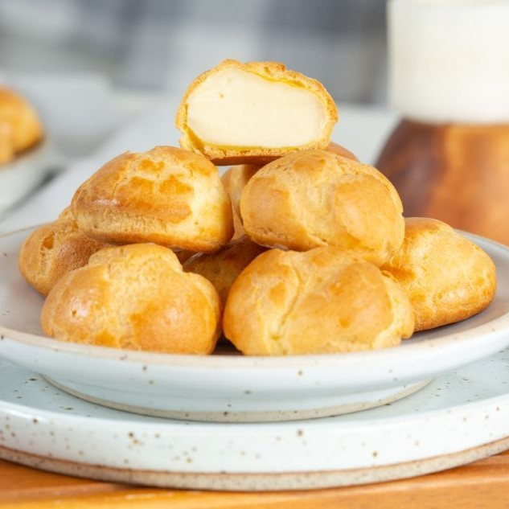

ชูว์ครีม

ส่วนผสม
★ ไส้นมสด ★
⋆ นมข้นจืด 380 กรัม
⋆ น้ำเปล่า 380 กรัม
⋆ น้ำตาลทราย 120 กรัม
⋆ แป้งข้าวโพด 85 กรัม
⋆ ไข่ไก่ 2 ฟอง
⋆ กลิ่นวานิลลา 1 ฝา
⋆ เนยสดเค็ม 80 กรัม
★ แป้ง ★
⋆ แป้งเค้ก 110 กรัม
⋆ ผงฟู 1 ช้อนชา
⋆ น้ำเปล่า 195 กรัม
⋆ น้ำเปล่า 195 กรัม
⋆ ไข่ไก่ 3 ฟอง
⋆ น้ำตาลทราย 1/2 ช้อนโต๊ะ
วิธีทำ
1) ทำตัวไส้นมสด ตีไข่กับน้ำตาลจนขึ้นฟูประมาณ 3นาที ใส่ส่วนผสมทั้งหมด ยกเว้นเนย
2) ใส่กลิ่นวานิลลา ตีต่อ 1นาทีจนละลาย นำขึ้นตั้งไฟกลางค่อนไปทางอ่อน
คนไปทางเดียวกัน ตีให้เนียนจนเห็นรอยตะกร้อ
3) นำลงจากเตา แล้วใส่เนยคนให้ละลาย พักไส้ไว้ให้เย็น
4) ร่อนแป้งเค้ก ผงฟูแล้วพักไว้
5) ใส่น้ำเปล่า น้ำตาล เนยลงในภาชนะ ขึ้นตั้งไฟกลางคนจนเดือด
แล้วใส่แป้งที่ร่อนไว้ลงไปในภาชนะ แล้วรีบคนให้เข้ากัน คนด้วยความแรงและเร็ว
จนแป้งไม่ติดภาชนะ นำลงเตา
6) นำมาคนให้คลายร้อน ใส่ไข่ลงไป แนะนำให้ตีไข่ใส่ภาชนะต่างหากแล้วทยอยเทใส่
แล้วคนๆตีๆ ให้เนียน เมื่อยกไม้พายขึ้นตัวแป้งไม่ขาด ยกขึ้นแล้วจะเป็นเหมือนตัว V
7) ตักตัวแป้งใส่ที่บีบ แล้วบีบตามใจชอบ รองด้วยกระดาษไข นำเข้าอบ 200/20นาที
ต่อด้วย 180/10นาที ห้ามเปิดเตาดูจนกว่าจะครบเวลาเด็ดขาด
7) นำตัวแป้งที่อบเสร็จมาพักให้เย็น แล้วนำมาบีบไส้ใส่